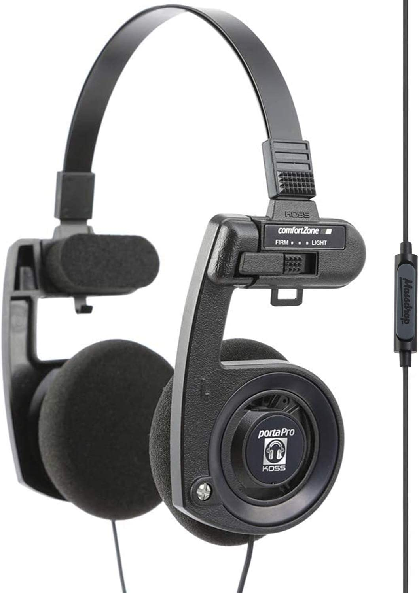

Koss Porta Pro
Timeless 80s design with a warm, nost...
With a 81% score, the Koss Porta Pro is a competent performer with some quirks.
Brutally honest takes on 40 headphones. No sugar coating.
Timeless 80s design with a warm, nost...
With a 81% score, the Koss Porta Pro is a competent performer with some quirks.
Sporty clips design
With a 75% score, the Koss KSC75 is a competent performer with some quirks.

The gateway drug to audiophilia
With a 82% score, the Koss KPH30i is a competent performer with some quirks.
Studio reference sound at budget price
With a 81% score, the Samson SR850 is a competent performer with some quirks.
V-shaped with brighter treble emphasis
At 74%, the KZ ZSN Pro has its moments but faces stiff competition.
V-shaped with darker tone
With a 84% score, the KZ ZS10 is a competent performer with some quirks.
Neutral with bass boost
With a 78% score, the Moondrop Crescent is a competent performer with some quirks.
Pure neutral tuning at budget price
At 85%, the Moondrop Chu earns our strong recommendation.
Warm and detailed sound signature
With a 77% score, the Tin HiFi T2 Plus is a competent performer with some quirks.
Harman-neutral studio monitoring
At 72%, the Shure SRH440 has its moments but faces stiff competition.
V-shaped fun signature
With a 75% score, the Tin HiFi T3 Plus is a competent performer with some quirks.
Harman-neutral tuning with excellent ...
With a 84% score, the Moondrop Aria is a competent performer with some quirks.

Bluetooth neutral with bass boost option
With a 75% score, the Lypertek PurePlay Z3 2.
Brooklyn-made with bright, energetic ...
At 88%, the Grado SR80x earns our strong recommendation.
Open-back studio standard
With a 80% score, the Beyerdynamic DT990 Pro is a competent performer with some quirks.

Built like a tank
With a 76% score, the Beyerdynamic DT770 Pro is a competent performer with some quirks.
Bass-heavy gaming with surround sound...
With a 79% score, the Drop x Sennheiser PC38X is a competent performer with some quirks.
Bluetooth studio headphones
With a 77% score, the Audio-Technica ATH-M40x is a competent performer with some quirks.
Planar magnetic with bright signature
With a 79% score, the Hifiman Deva is a competent performer with some quirks.
Closed planar magnetic
With a 81% score, the Monolith M1060C is a competent performer with some quirks.
Bluetooth with excellent controls and...
With a 80% score, the Microsoft Surface Headphones 2 is a competent performer with some quirks.

Classic AirPods
At 70%, the AirPods 2 has its moments but faces stiff competition.
Analytical listening
With a 82% score, the Etymotic ER3SE is a competent performer with some quirks.
Analytical with bass boost
With a 79% score, the Etymotic ER3XR is a competent performer with some quirks.
True wireless for sports
At 87%, the Bose SoundSport Free earns our strong recommendation.
Comfortable planar IEM
At 86%, the 7HZ Timeless earns our strong recommendation.

Apple ecosystem with excellent ANC
With a 80% score, the AirPods Pro 2 is a competent performer with some quirks.
Wireless Grado sound
At 74%, the Grado GW100x has its moments but faces stiff competition.
Just need something good enough with ANC
With a 80% score, the Bose QC35 II is a competent performer with some quirks.
Best noise cancelling, great for calls
With a 81% score, the Bose 700 is a competent performer with some quirks.
Best sound quality in ANC category
With a 79% score, the Sony WH-1000XM5 is a competent performer with some quirks.
THE benchmark of neutral
With a 78% score, the Sennheiser HD 600 is a competent performer with some quirks.
Apple ecosystem premium ANC
With a 80% score, the AirPods Max is a competent performer with some quirks.
Premium closed-back studio
At 74%, the Beyerdynamic DT 1770 Pro has its moments but faces stiff competition.
Premium open-back studio
At 89%, the Beyerdynamic DT 1990 Pro earns our strong recommendation.
Balanced sound TWS with ANC
At 71%, the Sony WF-1000XM4 has its moments but faces stiff competition.
V-shaped luxury TWS with ANC
At 86%, the Bowers & Wilkins PI7 earns our strong recommendation.
Soundstage king! But has treble spike
At 72%, the Sennheiser HD800 has its moments but faces stiff competition.
35 Ohm planar flagship
At 87%, the Hifiman HE1000 earns our strong recommendation.
Endgame planar
With a 80% score, the Hifiman Susvara is a competent performer with some quirks.